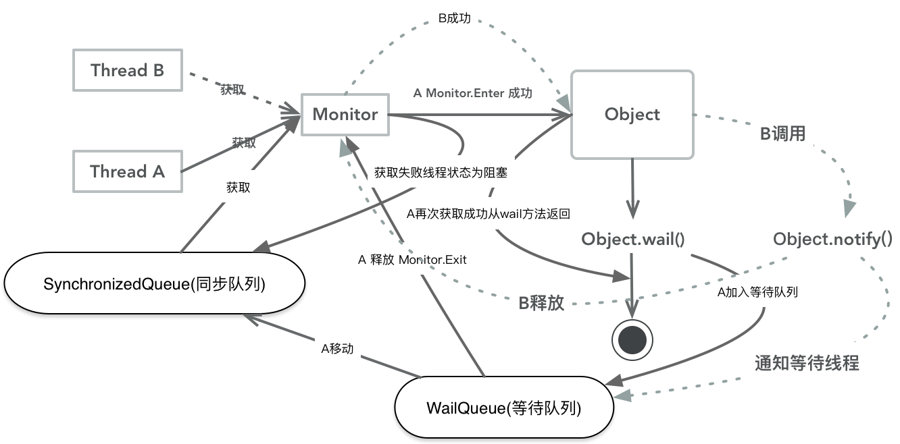
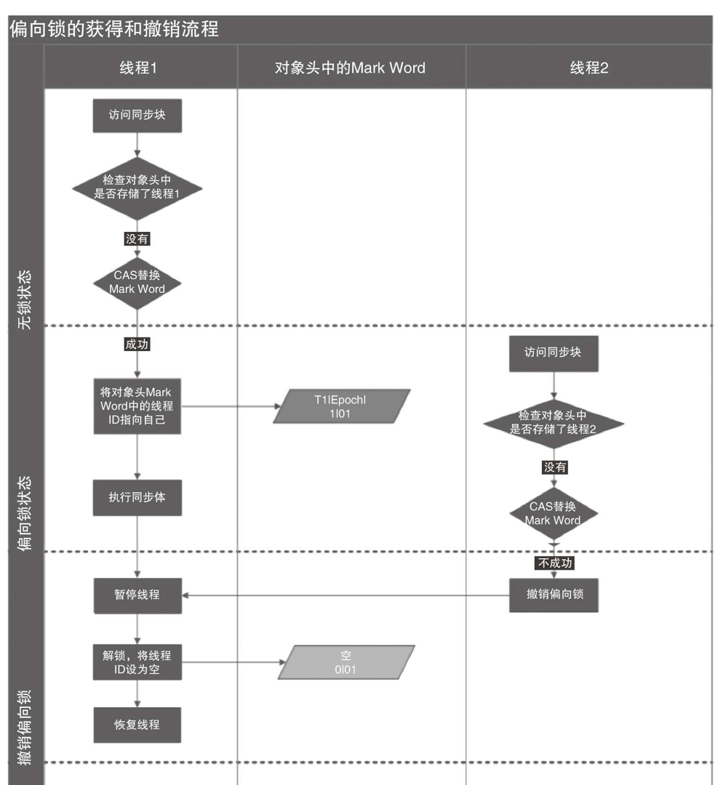
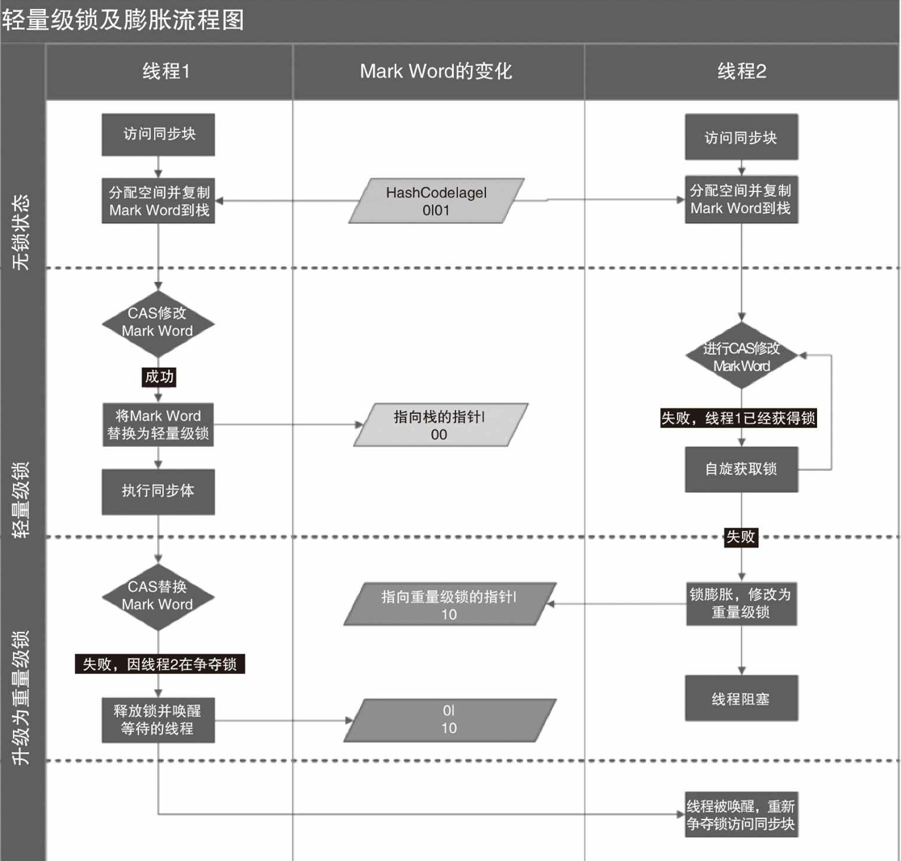
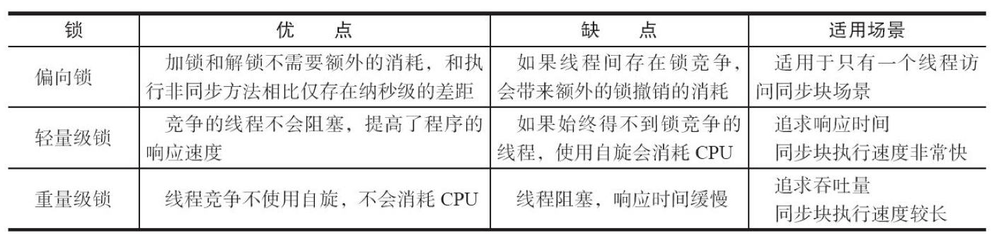

使用synchronized可以让Java 中任何对象成为锁，具体表现分为3种形式
- 对于普通对象锁是当前实例。
- 对于静态方法锁的是当前Class对象。
- 对于同步快锁的是括号中的对象。
当一个线程访问同步快时必须先获取锁，退出或者异常自动释放锁原理如下： 实现：
synchronized 原理是基于线程对Monitor(监控)对象的进入和退出来实现代码块同步和方法同步的。在编译后会插入monitorenter 和monitorexit 指令来实现的。jvm保证monitorenter会插入块的开始monitorexit会插入结束和异常位置。任何对象都有一个monitor器，当一个线程持有了monitor后，其它线程无法在持有，即对象是处于锁定状态。

synchronized锁的状态
- 无锁状态
偏向锁状态
大多数情况下锁不仅不存在多线程竞争，而且总是由同一个线程获取,为了让线程获取锁的代价更低引入了 偏向锁。 加偏向锁：当一个线程访问同步快时候会在对象头和栈帧中存放线程ID,以后该线程在进入和退出同步快时候不要cas操作来更新对象头中的值。只需要简单判断下对象头中偏向锁ID是否指向当前线程。如果失败还需要判断当前锁标示位是否为1也就是是否为偏向锁。撤偏向锁
1. 偏向锁使用了一种等待竞争出现才会释放锁的机制， 2. 想要等到安全点。首先会暂停拥有偏向锁的线程,如果线程不处于活动状态，将对象头设置为无锁状态，如果处于活动状态,拥有偏向锁的栈会先执行,如果线程还未退出同步快，那么会标记为不适合作为偏向锁。如果线程退出同步快，更新对象头中JavaThread（偏向锁指针）指向其它线程ID。

3.轻量级锁状态
* 加锁 ，线程在执行同步块之前， JVM会先在当前线程的栈桢中创建用于存储锁记录的空间， 并将[对象头](/dui-xiang-tou.md)中的MarkWord复制到锁记录中， 然后线程尝试使用CAS将对象头中的MarkWord替换为指向锁记录的指针。当前线程获得锁， 如果失败， 表示其他线程竞争锁， 当前线程便尝试使用自旋来获取锁。
* 解锁，轻量级解锁时， 会使用原子的CAS操作将 MarkWord替换回到对象头， 如果成功，则表示没有竞争发生。 如果失败,表示当前锁存在竞争,锁就会膨胀成重量级锁。

4.重量级状态
一旦锁升级成重量级锁， 就不会再恢复到轻量级锁状态。 当锁处于这个状态下， 其他线程试图获取锁时， 都会被阻塞住， 当持有锁的线程释放锁之后会唤醒这些线程， 被唤醒的线程就会进行新一轮的夺锁之争。
